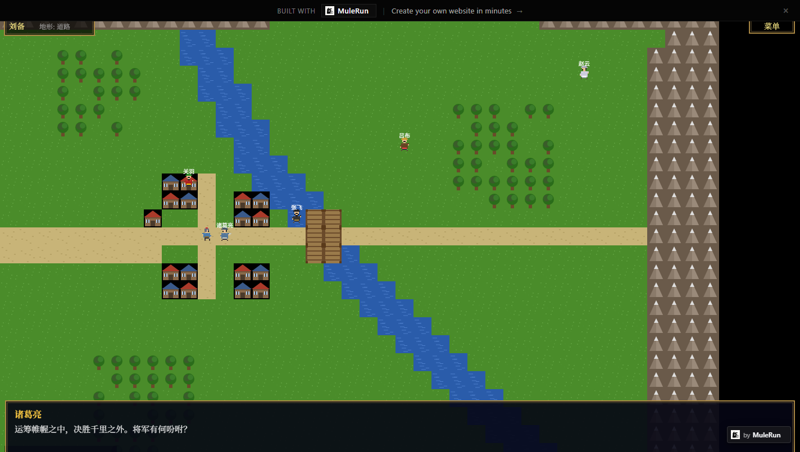
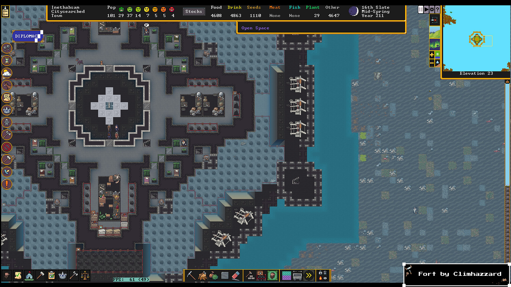
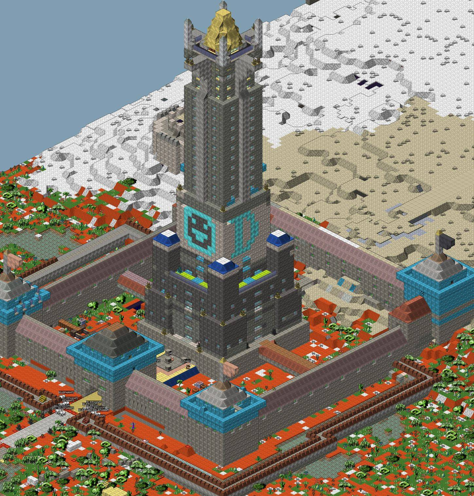
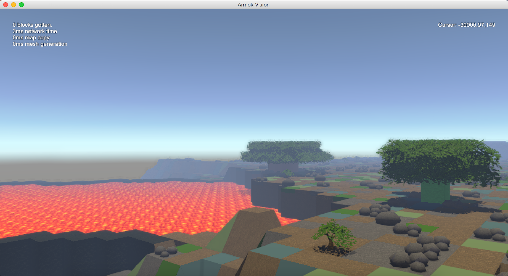
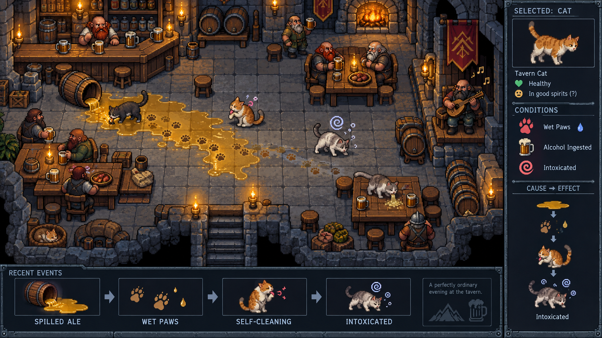
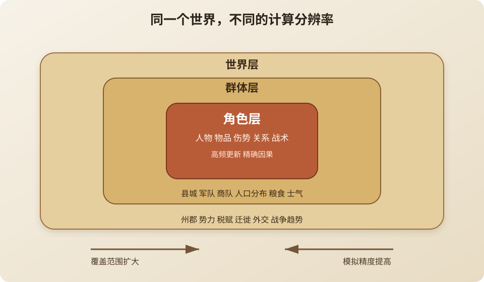
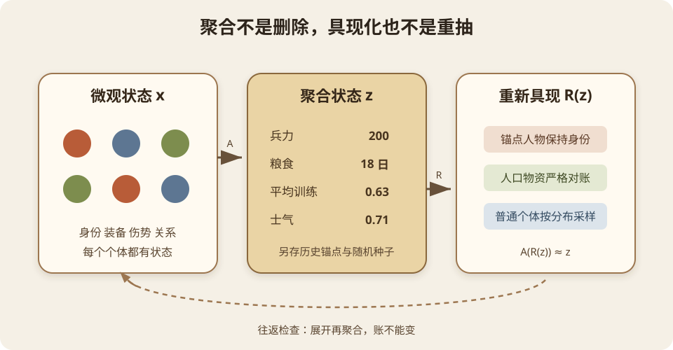
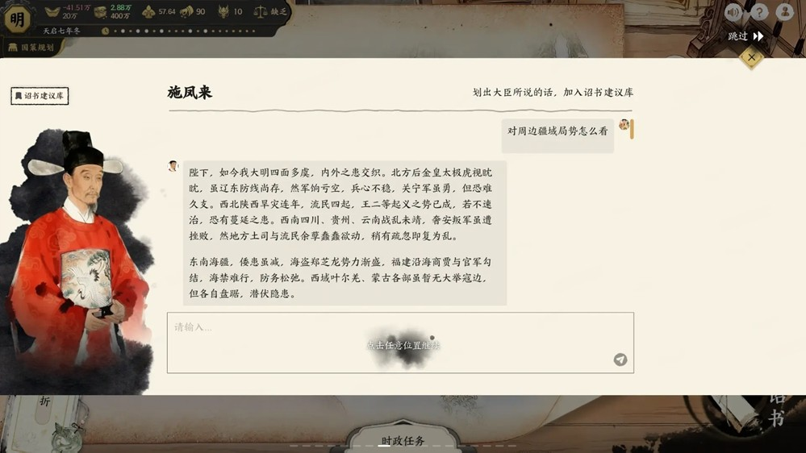

游戏世界的分层模拟
2026年09月29日 星期二我一直想做一款三国背景的角色扮演游戏。
不是《三国志》那种坐在地图外面点城市，也不是《真三国无双》那种一个人在战场里割草。我想要的是人在三国世界里面：可以是个刚出道的小人物，赶上黄巾之乱，认识刘关张；也可以慢慢有自己的部曲，参与官渡、赤壁；再往后还能做一方诸侯，从个人视角发号施令，让几千人去打仗。
今年年初，我还试过在 MuleRun 里用一句话做这个游戏，得到一个叫《三国志·英雄传》的游戏原型。刘备能在地图上走，靠近诸葛亮还能和他说话。但把人物放进三国地图，只是个开始。

今年年初用 MuleRun 一句话生成的游戏原型，截图为实际游戏画面。
问题也就跟着来了。
玩家还是小人物的时候，游戏需要知道一壶酒多少钱、客栈还有没有空房、街上的县卒认不认识你。玩家成为将军以后，游戏又要知道一万人的粮草还能吃几天、哪支部队正在绕路、哪个县准备倒向敌人。更麻烦的是，这两个尺度不是两个游戏。昨天和你喝酒的县卒，今天可能就在你的军阵里；你烧掉的一片麦田，半年后应该变成某座城里的粮荒。
如果所有东西都精确计算，做出来的东西很像《矮人要塞》。如果远处只留几个数字，又很容易变成一张会刷事件的表格。
我想讨论的是中间那条路：分层世界模拟。
《矮人要塞》到底模拟了什么
《矮人要塞》经常被叫作“全量世界模拟”的代表。这个说法很形象，但是不够严谨。它并不是把全世界每个对象的全部逻辑，在每一个 tick 都重新算一遍。不同系统有自己的更新频率，地图之外的历史活动也会采用更抽象的处理。

《矮人要塞》Steam 版游戏画面，截图来自官方商店页。画面里同时存在人口、库存、房间、机械装置、水域和大量地形格。
在 Steam 版以前，社区还给经典版做过不少第三方“图壳”。更准确地说，它们是读取游戏状态的可视化器，底层仍然是同一个《矮人要塞》。最有代表性的是 Stonesense：它作为 DFHack 插件打开一个只读窗口，把一层层的二维格子重新画成等距 3D，还可以同时显示多个 Z 层。[13]

Stonesense 显示的 Roadtruss 地上要塞。截图来自 DFHack 官方文档。同一份模拟状态，换一个观察方式，就能看见原界面很难表达的高度和建筑结构。
另一个项目 Armok Vision 更激进。它是单独运行的 Unity 程序，通过 DFHack 的 remotefortressreader 接口读取地图，再生成可以自由观察甚至用第一人称行走的 3D 场景。[14]

Armok Vision 读取《矮人要塞》地图后的 3D 视角，熔岩池、地形断层和前景斜坡呈现出地图的高度。
这些工具有个很有意思的启发：模拟的分辨率和画面的分辨率不是一回事。 ASCII、像素图块、等距 3D 和第一人称 3D 可以只是同一世界状态的不同投影。反过来，画面做成 3D 也不会自动增加世界深度。对我想做的三国游戏，这意味着角色视角、战场视角和州郡地图未必需要三套互相打架的世界，只需要三套针对不同尺度的观察与操作方式。
它真正厉害的地方，是把玩家所在地点的许多系统都落到了可交互的对象上：矮人有性格、需求、技能、记忆和身体部位；物品有材质、品质和归属；液体按格流动；战斗会打中具体组织；世界生成时还会生成地形、气候、文明、战争和历史人物。
这些东西不是一叠互相看不见的数值。它们能接起来。
最出名的例子大概是 2015 年的“猫酒精中毒事件”。酒馆里的矮人会把酒洒在地上；原本用来传播血脚印的代码，让走过酒液的猫爪沾上了酒；猫又有舔毛清洁的行为，清洁时会吃下身上的污染物；酒精系统最后再按照体型计算醉酒反应。几套单独看都很合理的规则接在一起，结果就是猫喝醉、呕吐，早期版本里甚至会因酒精中毒死亡。真正的 bug 是清洁时把沾到的酒算成了整整一杯，对猫的体型来说剂量太大。[11][12]

根据猫酒精中毒事件重新绘制的拟游戏截图，并非《矮人要塞》官方画面。底部依次表现酒液洒落、猫爪沾酒、舔爪清洁和醉酒的因果链。
这件事最妙的地方，是代码里根本没有一条“猫走进酒馆以后随机喝醉”的剧情规则。开发者只实现了液体沾染、足迹、清洁、摄入、体型和酒精反应，荒唐的结果由系统之间的接口自己推了出来。修复剂量错误以后，猫仍然可以因为舔到酒而醉，只是不再轻易暴毙。好的涌现不是凭空随机，而是意外结果能够沿着规则一层层倒推回去。
一个矮人失去亲人，情绪变坏，工作效率下降，和别人发生冲突，冲突又影响更多人。一次普通的袭击可以经过身体、物品、心理和社会关系几套系统，最后成为玩家记得很多年的故事。这类故事不是从剧本库里抽出来的，而是从状态和规则的连续作用里长出来的。
Tarn Adams 在《Simulation Principles from Dwarf Fortress》里总结过四条原则：尽早让模型跑起来；把系统拆成基本元素和交互；不要制造没有意义的复杂度；尽量参照现实中的对应物。他还特别提醒，只模拟玩家能看到的层级，或者再往下一层。这个说法很重要，因为《矮人要塞》虽然复杂，开发者也没有把“变量越多”当成美德。[1]
换句话说，《矮人要塞》的关键不是“每个东西都算”，而是：被算的东西有统一的状态，并且不同系统愿意互相负责。
全量模拟的问题不只是慢
假设有 \(N\) 个角色，每个角色选择行为时都要检查另外 \(N-1\) 个角色，朴素计算量就是：
一百个人只有一万级别的关系检查，一万人就变成一亿。寻路、物品搜索、社会关系、战斗目标选择，都可能偷偷长成这种规模。即便每个角色只在附近找人，附近人数随着密度上升，成本还是会迅速增加。
更常见的是大量看起来只有 \(O(N)\) 的系统叠在一起：
\(N_s\) 是参与第 \(s\) 个系统的对象数，\(c_s\) 是一次更新的成本。人口、物品、温度格、液体格、植物、任务和关系各扫一遍，单个循环都不吓人，加起来就吓人了。《矮人要塞》的开发者也公开谈过物品、搬运、寻路、温度和天气带来的性能压力。[2]
但 CPU 还不是最难的问题。
第一个问题是调试。 系统越多，因果链越长。玩家看到一座城突然饿死，开发者得判断这是运输失败、库存统计错误、道路被占用，还是某个县令的任务卡住了。所谓涌现，有时是精彩故事，有时只是一个很难复现的 bug。
第二个问题是调参。 五十个变量并不会自动产生五十倍的深度。它们也可能互相抵消，制造噪声，让设计者失去对结果的控制。
第三个问题是内容利用率。 玩家一次只能在一个地方。你给千里之外的村民算出了今天早餐吃什么，如果这个状态既不会传到玩家所在区域，也不会影响后来的世界，它就只是烧掉了一点电。
第四个问题是确定性也救不了故事。 全量模拟能够保证因果成立，却不能保证因果有趣。真实世界每天也发生大量无聊的事情。模拟得细，只是给涌现创造条件，并不等于自动拥有叙事。
这不只是我的担心。Michael Mateas 等人研究《矮人要塞》和《模拟人生》这类涌现叙事系统时，把一个老问题重新提了出来：底层模拟明明很丰富，玩家却未必看得见其中的故事。他们把它叫作 Tale-Spin effect。模拟器既不一定能从大量普通事件里识别出哪一段称得上故事，也不一定知道怎样把它呈现给玩家。因此他们把“故事识别”和“故事支持”单独列为设计难题。[4]
这个观点对“全量模拟崇拜”是一盆很有必要的冷水。后台发生一万件事，不等于玩家获得了一万个故事。真正有用的系统还需要发现异常的因果链，把相关人物和前因后果串起来，再用合适的形式送到玩家面前。
2026 年的一次采访里，Tarn Adams 说他们判断一层模拟值不值得加入时，会亲自反复体验；如果过程中能看到一个不错的叙事节拍逐渐形成，才说明它可能有效。[5] 这个标准没有数学味，却很务实：模拟的单位不是变量，而是它最终能不能形成玩家愿意讲出来的事情。
所以我不想复制《矮人要塞》的规模。我更想复制它的因果性。
分层模拟到底在近似什么
“分层模拟”常见的英文叫 Simulation LOD、multiresolution simulation 或者 hierarchical simulation。它和渲染 LOD 很像：近处画完整模型，远处画简化模型。不过渲染 LOD 只要看起来差不多，模拟 LOD 还要保证账能对上。
这套思路并不是游戏开发里的临时偏方。仿真领域把它叫作 Multiple Resolution Modeling，早就用于军事、交通、供应链等大规模系统。相关综述把 resolution 定义为模型描述现实对象时所使用的细节和精度，并指出战役级模型必须快速跑过几十天，工程级模型则可以把很短的过程算得很细，两者本来就在回答不同的问题。[6]
多层 Agent 模拟的研究也把微观到宏观叫作 aggregation，把宏观重新落回个体叫作 disaggregation。Mathieu 等人认为，多层模型不只是为了省计算量，还可以把领域专家真正关心的组织层次显式表示出来，或者让不同尺度的模型互相耦合。[7] 这对三国游戏很有启发：县、军队、家族和势力不应该只是为了优化才临时捏出的缓存，它们本来就是游戏世界里的真实行动者。

对三国游戏，我会先分成三层：
- 角色层：玩家周围的街道、府邸和战场。人物是完整实体，有位置、装备、伤势、关系和当前意图。
- 群体层：玩家暂时看不到的县、军队和商队。只保存人口分布、粮食、财富、士气、疾病率、派系等统计量。
- 世界层：州郡和势力。处理税赋、迁徙、战争趋势、外交和演义事件的约束。
设完整微观状态为 \(x\)，聚合状态为 \(z\)，把一群具体对象压缩成统计量的操作记作 \(A\)：
微观模拟器是 \(F\)，粗粒度模拟器是 \(G\)。我们不可能要求两个系统在每一个人的每一个动作上相同，但可以要求粗模型推进之后，和微观模型推进之后再聚合的结果接近：
这就是分层模拟最核心的一条式子。
左边是“先把一座县城压成统计数据，再模拟一天”；右边是“让县城里所有人真的生活一天，再统计结果”。如果两边的人口、粮食、财富、伤亡和关键事件概率接近，那么玩家不在场时就可以放心走左边。
这里的“接近”也不能只写成一句感觉。可以定义误差：
\(P\) 是人口，\(G\) 是粮食，\(q\) 是事件分布，\(D_{JS}\) 是衡量两个概率分布差异的 Jensen-Shannon 散度。下标 \(c\) 表示粗模拟，\(f\) 表示细模拟。不同游戏可以用权重 \(\alpha\) 决定什么更重要。
玩家不会在意远处县城第 317 个农民昨天走了哪条路，但会在意这座县城不该凭空多出五千石粮食，也会在意号称打了三个月的战争不能一个人都没死。
因此分层模拟追求的不是轨迹相同，而是守恒量相同、分布相近、关键因果不丢。
最大的坑在层级接缝
聚合很容易。两百个士兵可以压成“兵力 200、平均训练 0.63、士气 0.71、弓手占比 25%”。难的是玩家骑马赶到以后，怎么把这几个数字重新变回两百个人。
这个过程通常叫 realization 或 instantiation，也就是具现化。

最差的做法是临时随机生成两百个士兵。因为玩家会发现，上次见过的百夫长没了，军队明明挨过饿，所有人却都健康，账面上只有十个伤员，现场躺着的却是二十个。
仿真文献对这个问题的说法更直接：不同分辨率的模型连接时，需要专门的 resolution converter；否则两个模型交换的实体、属性、空间尺度和时间尺度都可能对不上。[6] 游戏里的“玩家进入地图”其实就是一次分辨率转换，只不过转换失败时不会收到论文里的误差报告，而是直接变成穿帮。
更可靠的做法是把状态分成三类：
- 永不聚合的锚点：玩家见过的人、历史人物、神器、仇恨、誓约、重伤等。它们数量少，但必须永久保留身份。
- 可以聚合的守恒量：人口、粮食、钱、兵器、伤亡。这些必须严格对账。
- 可以重采样的分布：普通士兵的年龄、熟练度、小伤、性格。具现化时从保存的分布中采样。
如果具现化函数记作 \(R\)，至少应满足往返一致性：
也就是说，把统计状态展开成个体，再聚合回去，不能变成另一支军队。
我还会给每个区域保存一个随机种子。这样相同的聚合状态在没有新事件时可以稳定地生成相同细节，避免玩家进出地图就“刷新”出不同的人。重要对象固定保存，普通对象用分层种子生成，算是存档容量和世界连续性之间的折中。
一个能实际落地的更新方法
分层不应该只有近、中、远三个固定圆圈。三国世界里，远处的赤壁之战可能比玩家身边一只鸡重要。模拟精度应该由“距离”和“因果重要性”共同决定。
可以给区域或实体定义一个重要度：
\(d\) 是到玩家的距离，\(r\) 是与玩家的关系强度，\(e\) 是当前事件的重要程度，\(h\) 是历史锚点权重。按 \(I\) 决定更新方式：
- \(I \ge \tau_2\)：角色层，每个 tick 或固定帧更新。
- \(\tau_1 \le I < \tau_2\)：群体层，每几秒或每个游戏时辰更新。
- \(I < \tau_1\)：世界层，每天或由事件触发更新。
然后再加一个预算调度器。每帧只给模拟固定的时间 \(B\)，所有待更新任务按重要度与逾期时间排队：
第二项可以防止低重要度对象永远饿死在队列里。近处对象更新得勤，远处对象更新得慢；战争、饥荒、玩家关系人物等会临时升级。
远处平静的县城也不需要每隔一天轮询一次。它可以计算下一件事情发生的时间，然后睡眠。比如某种事件的发生率是 \(\lambda\)，下一次事件的等待时间可以从指数分布采样：
人口越多、治安越差，盗匪事件的 \(\lambda\) 越高；粮食越少，逃亡和哗变的 \(\lambda\) 越高。系统只在事件发生、外部输入到达或者玩家接近时唤醒这个区域。这比每 tick 问一遍“今天造反了吗”干净得多。
实现顺序上，我会这样做：
- 先做一套唯一的世界账本，人口、物资和人物身份只有一个权威来源。
- 做角色层的精确模拟，先把一座小县城跑起来。
- 为每个子系统定义聚合量和守恒量，再写 \(A\) 和 \(R\)。
- 用角色层离线跑很多次，测出县城在不同输入下的产出、伤亡和事件分布。
- 写群体层规则，持续比较 \(G(A(x))\) 与 \(A(F(x))\)。
- 最后才做自动升降级和预算调度。
这条顺序和 Tarn Adams 的思路其实很接近：不要先画一套巨大架构，先让小模型工作，再从运行结果里发现真正需要的抽象。[1]
用细模拟教会粗模型
上面第四步还有一种走法：既然细模拟已经能在小范围里跑，就让它离线反复运行，把输入和结果攒成训练集。比如给一座县城不同的人口、土地、存粮、税率和治安，再施加征兵、旱灾或商队到来等外部输入，记录一个月后的粮食、人口和逃亡人数。粗模型不一定全靠手写，也可以让机器学习去拟合这组输入和输出之间的关系。这就是代理模型（surrogate model）的思路：用一次便宜的预测，替代一次昂贵的细计算。[15]
如果把细模拟记为 \(F\)，聚合记为 \(A\)，外部行动记为 \(u\)，训练数据可以写成：
\(G_\theta\) 学的不是“替所有人编故事”，而是“这组条件下，一个月后大概会怎样”。碰上饥荒、战乱这类随机性大的结果，最好预测一个分布，而不是只报一个平均数。训练样本也不能全是太平年月，否则模型只会学到“县城通常没事”，最重要的极端情况反而不会算。
这里要把开发期和游戏运行期分开算。生成训练数据、调整模型确实慢，但这些工作可以离线完成，不会在玩家的每一帧里重来。假设单次细模拟的成本是 \(C_{fine}\)，小模型推理的成本是 \(C_{infer}\)，远处县城一共需要推进 \(M\) 次，其中只有 \(K\) 次因战争或玩家接近而回退到细模拟，那么运行期的成本大致是：
只要 \(C_{infer}\ll C_{fine}\)、\(K\ll M\)，运行时就能省下大量计算。对需要更新成千上万个角色的县城，这是有希望做到的。训练的代价主要由开发者承担；玩家付出的则是代理模型可能不够准，而不是等它现场训练。当然，如果原本只是一条简单的加减法规则，就没有必要再套一个模型。
更难的是误差会滚雪球。单步偏一点，连续预测几年以后可能把一个富县算成灾区。所以要测多步演化，不只测下个月；要把模型输出投影回合法状态，让粮食和人口能对账；置信度低、碰到战争或玩家亲自介入时，就切回细模拟或显式规则。它适合替远处的世界省计算，不适合替眼前的因果免检。
演义事件怎么放进模拟世界
如果完全按历史时间表硬触发，模拟只是给剧本当背景。如果完全不管历史，刘备可能在黄巾之乱前就摔死，所谓三国背景很快就没了。
我的想法是把演义事件做成约束，不做成录像。
“桃园结义”不是公元某日强制播放一段过场，而是一组条件：三个人在涿郡附近；彼此关系和政治目标达到阈值；黄巾威胁存在；他们还没有加入互斥势力。满足条件以后，系统提高这个事件的发生概率。如果条件被玩家破坏，就允许它失败、变体或者由别的人补上位置。
这样既能保留熟悉的历史引力，也允许个人行动留下痕迹。世界层负责维持大的时代压力，角色层负责决定事情具体怎样发生。
这也解释了为什么分层模拟适合三国题材。演义本来就是多尺度叙事：上一章还在帐中劝降一个人，下一章已经是“起兵五十万”。小说不会交代五十万人每天吃了什么，但关键人物的承诺、背叛和死亡必须连续。它天然知道哪些东西该聚合，哪些东西不能丢。
LLM 应该放在哪一层
前面那个粗模型学的是状态怎样变化。可玩家进入县城，想问小吏为什么不肯开仓，单靠一组人口、粮食和税率数字还是回答不了。世界需要会说话的人，也需要有人把同一件事讲成奏报、流言或回忆。这里才轮到 LLM。
诱惑也在这里：既然它能把故事讲得这么像，能不能顺手让它决定故事里到底发生了什么？我觉得这一步要小心。LLM 擅长的是“下一段话像什么”，不是“仓库里到底还有多少粮”。它没有天然的守恒约束，也不擅长在许多轮对话后维持同一套精确状态。如果把世界状态直接交给它，迟早会出现死人复活、物资凭空增加、角色知道了不该知道的情报。这不是多写几句提示词就能彻底解决的问题。
《历史模拟器：崇祯》提供了一个很有意思的观察角度。少云在与老许的播客讨论里提到，玩家会遇到大臣下一回合忘记圣旨，也会尝试在明末造原子弹。有人把“忘记圣旨”解读成皇帝被架空，反而觉得很有味道；超时代的发明也可以成为架空历史的玩法。[16] 这两种反应我都能理解。问题不是游戏里绝对不能有原子弹，而是它究竟经过了怎样的研发、资源和时间过程。如果只因为玩家说了一句“造出来了”，模型就顺着往下写，那是语言生成越过了世界状态；如果游戏明确允许穿越科技，并且把代价和后果纳入规则，那才是可追问的涌现。大臣忘记命令也一样：可以有阳奉阴违，但得留下谁收到了命令、谁决定抗命的记录，不能把上下文丢失当成唯一机制。

《历史模拟器：崇祯》的大臣对话界面。玩家用自然语言发问，大臣以奏对回应。截图来自 3DM 的游戏首测报道，此图并非“造原子弹”的画面。
所以我并不想把《崇祯》的越界玩法一概判成 bug。玩家拿系统的边界做实验，本来就是游戏的乐趣；少云在播客里也强调了这一点。[16] 但如果我要做的是一个能从个人视角追问因果的三国世界，就得先决定哪些边界允许被突破，哪些账绝不能糊弄。让 LLM 提方案、演人物、写奏报都可以；要不要真的造出东西，还是交给世界规则裁决。
LLM 放在这样的引擎上面，才会非常有用。
斯坦福的 Generative Agents 实验给了一个正面的例子：25 个 Agent 通过观察、记忆检索、反思和计划，在一个类似《模拟人生》的小镇里形成了传播邀请、建立关系、共同赴约等社会行为。消融实验表明，记忆、反思和计划都对“看起来像一个可信的人”有贡献。[8] 这说明 LLM 确实可以补足传统游戏 AI 最弱的社会解释和自然语言层，但这个实验的规模也提醒我们，它离一整个三国世界还有很远。
另一边，研究者把 GPT-4 生成的对白放进《极乐迪斯科》的状态和对白结构里，请 28 名真正的玩家评价。人工对白在逻辑一致性上的偏好比例是 61%，GPT-4 是 28%；有 32% 的生成结果至少被一名玩家判断为接上下一句后不合逻辑。模型虽然很会改写同一句话，也容易顺手添加不符合当前状态的信息。[9] 针对《天外世界》构建的 KNUDGE 数据集，更把“忠实于任务结构、人物背景和世界设定”当成独立问题，而不是默认语言模型自己会做到。[10]
所以 LLM 接进游戏以后，最重要的不是给它更多形容词，而是给它更窄、更可靠的权限。
第一，做叙事翻译器。 引擎给出结构化事实：“建安五年八月，运输队在白马附近损失粮食 320 石，原因是渡口被毁。”LLM 可以把同一事实分别写成军报、酒馆传闻、士兵家书和敌军檄文。事实不由它决定，表达由它完成。
第二，做认知过滤。 每个角色只拿到自己知道的事实。县令看到的是户籍和税粮，斥候看到的是道路和敌军，百姓听到的是带噪声的传闻。LLM 根据角色身份组织语言，但不能越过知识库读取世界真值。
第三，做异常解释和测试。 开发阶段可以让 LLM 阅读事件日志，归纳“这座城为什么饿死”，或者自动生成极端测试情景，专门尝试骗过规则，看看一条“造原子弹”的圣旨会不会被错误执行。但最终判定仍然由代码和断言完成。
最稳妥的分工可以概括为一句话：
代码保存事实，概率模型近似演化，LLM 负责把事实讲给人听。
最后
《矮人要塞》证明了一件事：许多简单系统只要共享同一个世界，确实能长出开发者没有写过的故事。它的代价也同样明显：性能、调试、调参和漫长的开发时间。
对我想做的三国游戏，全量模拟不是目的。玩家相信这个世界，靠的也不是后台悄悄更新了多少对象，而是几件更具体的事：物资不会凭空出现，人物不会无缘无故失忆，远处发生的战争会留下伤亡和难民，昨天结识的人今天仍然是同一个人。
分层模拟牺牲的是不可见的个体轨迹，保住的是可以被追问的因果。
有一天，玩家从一个无名小卒成为统兵将军，回到多年前路过的县城，发现当年救过的小吏已经成了县令；他还能说出那场饥荒，记得玩家烧掉的粮仓，并且因此拒绝提供军粮。我觉得做到这里，这个世界就已经活了。
至于那个县城里其他三千人昨天早上吃了什么，真的可以不算。
参考资料
- Tarn Adams, Simulation Principles from Dwarf Fortress, Game AI Pro 2, 2015.
- Bay 12 Games, Dwarf Fortress Talk 合集，其中开发者讨论了寻路、搬运、物品、温度和天气的性能问题。
- Dwarf Fortress Steam 商店页，游戏对世界、人格、战斗、天气与地质模拟的官方说明。
- James Ryan, Michael Mateas, Noah Wardrip-Fruin, Open Design Challenges for Interactive Emergent Narrative, 2015。文章讨论了涌现叙事中的模块化内容、组合表达、故事识别和故事支持。
- PC Gamer, Dwarf Fortress creator says we have a natural lean towards human-made stories, 2026。包含 Tarn Adams 对模拟系统、叙事节拍和生成式 AI 的看法。
- Mario Marin, Gene Lee, Jaeho Kim, Multiple Resolution Modeling: A Particular Case of Distributed Simulation, Information, 2020。
- Philippe Mathieu, Gildas Morvan, Sébastien Picault, Multi-level agent-based simulations: Four design patterns, Simulation Modelling Practice and Theory, 2018。
- Joon Sung Park 等, Generative Agents: Interactive Simulacra of Human Behavior, UIST 2023。
- Nader Akoury, Qian Yang, Mohit Iyyer, A Framework for Exploring Player Perceptions of LLM-Generated Dialogue in Commercial Video Games, Findings of EMNLP 2023。研究使用《极乐迪斯科》对白和 Lua 游戏状态评估生成文本。
- Nathaniel Weir 等, Ontologically Faithful Generation of Non-Player Character Dialogues, EMNLP 2024。
- PC Gamer, How cats get drunk in Dwarf Fortress, and why its creators haven't figured out time travel yet, 2016。Tarn Adams 解释了酒液、足迹、清洁、摄入剂量和体型计算形成的因果链。
- Dwarf Fortress Bug Tracker, 0009270 Tavern Keepers Serve Drinks to Animals potentially causing inebriation and death, 2015。原始问题记录及对猫自我清洁机制的排查。
- DFHack Documentation, Stonesense。该工具是具有游戏状态只读访问权的等距 3D 可视化器。
- RosaryMala, Armok Vision。基于 Unity、DFHack 与 protobuf 远程接口的实时 3D 可视化器。
- Michael Tynes 等, Will it blend? Achieving rapid, realistic dynamics with on-the-fly control and learning of surrogate models, Journal of Computational Science, 2026。讨论用机器学习代理模型替代昂贵的模拟子过程，以及推理、训练和原模型调用之间的成本权衡。
- 再聊 AI 游戏的生产、体验与涌现，小宇宙播客，2026。文中崇祯案例据播客讨论与听后笔记转述。